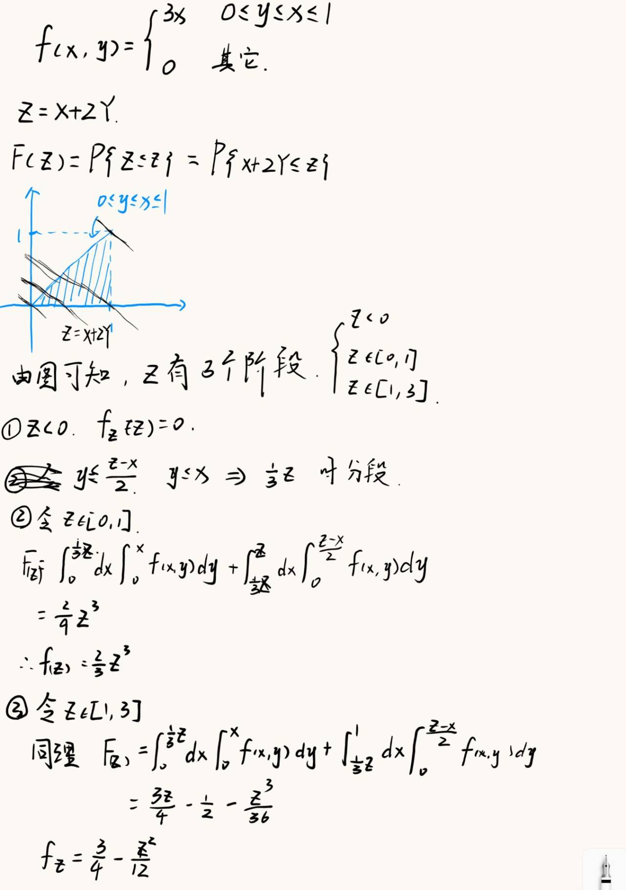

概率论与数理统计
第一章 随机事件和概率
\(P(AB)=P(A)P(B)\) 则称事件 \(A、B\) 独立
全概率公式 ：\(P(A)=\displaystyle\sum_{i=1}^{n}P(A|B_i)P(B_i)\)
第二章 随机变量及其分布
- 设随机试验的样本空间，\(X=X(\omega)\) 是定义在样本空间 \(\Omega\) 上的实值单值函数，称 \(X=X(\omega)\) 为 随机变量 ，一般用大写字母 \(X,Y,Z,\cdots\) 等表示随机变量，用小写字母 \(x,y,z,\cdots\) 表示随机变量的取值
- 连续性随机变量 ** ：设 \(X\) 是一个随机变量， \(x\) 是任意实数，函数 \(F(x)=P\text\{X \le x\text\},-\infty<x<+\infty\) 称为 ** \(X\) 的分布函数，表示 \(X\) 的取值落在实数 \(x\) 左侧的概率 ## 常见的离散型随机变量的分布
二项分布 \(B(n,p)\)
随机变量 \(X\) 表示 \(n\) 重伯努利试验中事件 \(A\) 发生的次数，记每次试验中事件 \(A\) 发生的概率为 \(p\)，则 \(X\) 的分布律为
0-1分布
设随机变量 \(X\) 只可能取 0 与 1两个值，它的分布律为
几何分布 \(Ge(p)\)
可列重伯努利试验中，记每次试验中事件 \(A\) 发生的概率为 \(p\)，随机变量 \(X\) 表示事件 \(A\) 首次发生时的试验次数 ，其分布律为
泊松分布 \(P(\lambda)\)/\(\pi(\lambda)\)
设随机变量 \(X\) 所有可能取得值为 \(0,1,2,\cdots\)，其分布律为
其中 \(\lambda>0\) 是常数，则称 \(X\) 服从参数为 \(\lambda\) 的泊松分布 泊松定理 ：设 \(\lambda>0\) 是一个常数， \(n\) 是任意正整数，设 \(\lambda=np_n\) ，则对于任意固定的非负整数 \(k\) 有
超几何分布 \(H(n,M,N)\)
随机变量 \(X\) 的分布律为

连续型随机变量的分布
均匀分布 \(U(a,b)\)
连续性随机变量 \(X\) 的概率密度为
指数分布 \(E(\lambda)\)
连续性随机变量 \(X\) 的概率密度为
\(X\) 的分布函数为
正态分布 \(N(\mu,\sigma^2)\)
连续型随机变量 \(X\) 的概率密度为
- 性质
- 曲线关于 \(x=\mu\) 对称，且当 \(x=\mu\) 的时候，\(f(x)_{max}=\dfrac{1}{\sqrt{2\pi}\sigma}\)
- 曲线以 \(Ox\) 轴为水平渐进线
- 常用结论
- \(P\{X>\mu\}=P\{X<\mu\}=\dfrac{1}{2}\)
- \(Y=aX+b\sim N(a\mu+b,a^2\sigma^2),a\ne 0\) 正态分布的标准化 若 \(X\sim N(\mu,\sigma^2)\),则 \(Z=\dfrac{X-\mu}{\sigma}\sim N(0,1)\)
第三章 多维随机变量及其分布
第四章 数字特征
切比雪夫不等式
设随机变量具有数学期望 \(E(X)=\mu\) 方差 \(D(X)=\sigma^2\) ,则对于任意正数 \(\epsilon\) ,有以下不等式
协方差
对于二维随机变量 \((X,Y)\)，若 \(E(X-E(X))(Y-E(Y))\) 存在，则称它为 \(X\) 与 \(Y\) 的协方差，记作 \(Cov(X,Y)\)
性质

相关系数
对于二维随机变量 \((X,Y)\) 若 \(D(X)\ne 0,D(Y)\ne 0\) 则称
为X和Y的相关系数，表明两者线性相关的程度，绝对值越大，线性相关的程度越高
第五章 大数定理和中心极限定理
大数定理的本质其实是频率收敛为概率
切比雪夫大数定律
切比雪夫不等式 设 \(X_1,X_2,\cdots,X_n,\cdots\) 是一列两两不想关的随机变量序列，期望和方差均存在，且方差 \(D(X_i)\) 一致有界，则对于 \(\forall \epsilon>0\) 有
特别的，如果 \(X_1,X_2,\cdots,X_n,\cdots\) 有相同的期望 \(\mu\) 则有
辛钦大数定律
设 \(\{X_n\}\) 为一独立同分布的随机变量序列，且数学期望存在， \(E(X_i)=\mu\) ,则对任意的 \(\epsilon>0\) ，都有
伯努利大数定律
设 \(f_A\) 是 \(n\) 重伯努利试验中事件 \(A\) 发生的次数， \(p\) 是 \(A\) 在每次试验中发生的概率，则对于任意的 \(\epsilon>0\) 都有
中心极限定理
列维–林德伯格定理 ：设 \(X_1,X_2,\dots,X_n,\dots\) 是一列独立同分布的随机变量，且 \(E X_k=\mu,\; D X_k=\sigma^2>0,\; k=1,2,\dots\)，则对任意 \(x\in\mathbb{R}\)，有
棣莫弗–拉普拉斯定理 ：在 \(n\) 重伯努利试验中，事件 \(A\) 在每次试验中出现的概率为 \(p\,(0<p<1)\)，\(X_n\) 为 \(n\) 次试验中事件 \(A\) 发生的次数，则对任意 \(x\in\mathbb{R}\) 有
随机变量 \(X_1,X_2,\cdots,X_n,\cdots\) 相互独立，服从同一分布，且具有数学期望和方差为 \(\displaystyle E(X_k)=\mu\) , $D(X_k)=\sigma^2>0 (k=1,2,\cdots) 则随机变量之和 \(\displaystyle \sum_{k=1}^nX_k\) 的标准化变量为
的分布函数 \(F_n(x)\) 对于任意 \(x\) 满足
第六章 数理统计基本概念
- 总体 ：研究对象某项数量指标的全体称为 总体 ** ，构成总体的每个成员称为 **个体
- 例如，研究一批机器的寿命，则全部机器的寿命构成问题的总体，每一台机器的寿命是一个个体，总体是寿命 \(X\) 服从的分布
- 样本 ：在相同条件下对总体 \(X\) 进行 \(n\) 次简单随机抽样，得到的 \(n\) 个观察结果。 \(X_1,X_2,\dots,X_n\) 相互独立 ** 且 ** 同分布于总体 ** \(X\)，称 \(X_1,X_2,\dots,X_n\) 为来自总体 \(X\) 的一个 ** 简单随机样本 ** ，简称 ** 样本 ** ，其中 \(n\) 称为 ** 样本容量 ** .抽样得到的一组实数记为 \(x_1,x_2,\dots,x_n\)，称为 ** 样本观察值 ** ，简称 ** 样本值 。
- *例如，从该批机器中随机抽取 20 台测定其寿命，既得到容量为 20 的样本观测值 \(x_1,x_2,\cdots,x_{20}\) 抽取前无法预知每台样本的寿命，因此样本 \(X_1,X_2,\cdots,X_{20}\) 是随机变量
- 经验分布函数 ：设 \(X_1,X_2,\cdots,X_n\) 为总体 \(X\) 的一个样本，其样本值为 \(x_1,x_2,\cdots,x_n\),则称函数
\displaystyle F_n(x)=\dfrac{{x_1,x_2,\cdots,x_n中小于或等于x的个数}}{n}(-\infty<x<+\infty) 为样本值 \(x_1,x_2,\cdots,x_n\) 的经验分布函数
- 统计量和统计值 定义 不含任何未知参数的样本函数 \(g(X_1,X_2,\dots,X_n)\) 称为 统计量 ** 。设 \(x_1,x_2,\dots,x_n\) 是对应于样本 \(X_1,X_2,\dots,X_n\) 的样本值，则称 \(g(x_1,x_2,\dots,x_n)\) 是 \(g(X_1,X_2,\dots,X_n)\) 的观测值，称为 ** 统计值 。
- 常用统计量
- 样本均值 ：
- 样本方差 ：
- 样本标准差 ：
- 样本k阶原点矩 ：
- 样本k阶中心距 ：
三大抽样分布 ：
统计量的分布称为 抽样分布
\(\chi^2\) 分布： 设 \(X_1,X_2,\dots,X_n\) 是来自总体 \(N(0,1)\) 的样本，则统计量
服从自由度为 \(n\) 的 \(\chi^2\) 分布，记为 \(\chi^2 \sim \chi^2(n)\)。
- 可加性
- \(\chi^2\sim\chi^2(n)\) 则有 \(E(\chi^2)=n,D(\chi^2)=2n\)
t分布 ：设 \(X\sim N(0,1)\) ,\(Y\sim\chi^2(n)\) 且 \(X,Y\) 独立，则称随机变量
服从自由度为 \(n\) 的 \(t\) 分布，记为 \(t\sim t(n)\)
- 偶函数
- \(t_{1-\alpha}=-t_{\alpha}(n)\)
F分布 设 \(X \sim \chi^2(n_1)\)，\(Y \sim \chi^2(n_2)\)，且 \(X,Y\) 独立，则称随机变量
服从自由度为 \((n_1,n_2)\) 的 \(F\) 分布，记为 \(F \sim F(n_1,n_2)\)，其中 \(n_1\) 称为第一自由度，\(n_2\) 称为第二自由度
- 若 \(F\sim F(n_1,n_2)\) ，则 \(\dfrac{1}{F}\sim F(n_2,n_1)\)
- \(F_{1-\alpha}(n_1,n_2)=\dfrac{1}{F_\alpha(n_2,n_1)}\)
正态总体抽样分布
一个正态总体 假设 \(X_1,X_2,\dots,X_n\) 是来自正态总体 \(X\sim N(\mu,\sigma^2)\) 的样本，样本均值与样本方差分别是
则有以下结论： 1） 样本均值的分布
2） 样本均值 \(\bar X\) 与样本方差 \(S^2\) 相互独立；
== 3）== 卡方分布性质
4） t 分布
两个正态总体 设 \(X_1,\dots,X_{n_1}\) 是取自总体 \(X\sim N(\mu_1,\sigma_1^2)\) 的一个样本，\(Y_1,\dots,Y_{n_2}\) 是取自总体 \(Y\sim N(\mu_2,\sigma_2^2)\) 的一个样本，且这两个样本相互独立，即 \(X_1,\dots,X_{n_1},Y_1,\dots,Y_{n_2}\)是 \(n_1+n_2\) 个相互独立的随机变量，则有：
1） 均值之差的分布
2） 方差比的分布
3） 当 \(\sigma_1^2=\sigma_2^2=\sigma^2\) 时
其中
第七章 点估计与估计量的评价
设总体分布函数 \(F(x;\theta)\) 的形式为已知， \(\theta\) 是 待估参数 ，\(X_1,X_2,\dots,X_n\) 为总体 \(X\) 的一个样本， 其样本值为\(x_1,x_2,\dots,x_n\) 点估计即构造一个适当的统计量 \(\hat\theta=\theta(X_1,X_2,\dots,X_n)\)，用它的观测值 \(\hat\theta=\theta(x_1,x_2,\dots,x_n)\)作为未知参数 \(\theta\) 的近似值。称 \(\hat\theta=\theta(X_1,X_2,\dots,X_n)\)为 \(\theta\) 的 估计量 ** ，\(\hat\theta=\theta(x_1,x_2,\dots,x_n)\) 为 \(\theta\) 的 ** 估计值 。
矩估计法
用样本矩估计同阶的总体矩，用样本矩的函数估计总体矩的函数，这种估计方法称为参数的 矩估计
Note
步骤 估计 k 个位置参数 \(\theta_1,\theta_2,\cdots,\theta_n\) \(X_1,X_2,\cdots,X_n\) 为来自总体 \(X\) 的样本，令
解得 \(\hat\theta_l=\theta(X_1,\cdots,X_n)\)
Tip
- 矩估计使用前提是有总体矩的存在
- 用样本一阶原点矩 \(\bar X\) 估计期望 \(E(X)\)
- 用样本二阶中心矩 \(\dfrac{1}{n}\displaystyle\sum_{i=1}^{n}(X_i-\bar X)^2\) 估计方差 \(D(X)\)
最大似然估计法
似然函数离散型总体 \(X\)，设 \(P\{X=a_i\}=p(a_i;\theta),\quad i=1,2,\ldots,\quad \theta\in\Theta\)
则称
为该总体的似然函数。 连续型总体 \(X\)，设 \(X\sim f(x;\theta),\quad \theta\in\Theta\) 则称
为该总体的似然函数。
将似然函数理解为恰好取到样本值的概率
=最大似然估计=
固定样本值 \(x_1,x_2,\ldots,x_n\)，在 \(\theta\in\Theta\) 内使似然函数 \(L(\theta)=L(x_1,\ldots,x_n;\theta)\) 达到最大的参数值 \(\hat\theta(x_1,\ldots,x_n)\)，作为参数 \(\theta\) 的估计值。 最大似然估计不变性原理： 设 \(\hat\theta\) 是未知参数 \(\theta\) 的最大似然估计，函数 \(g(\theta)\) 具有单值反函数，则 \(g(\hat\theta)\) 是参数 \(g(\theta)\) 的最大似然估计量。
设总体 \(X\sim N(\mu,\sigma^2)\)（\(\mu,\sigma^2\) 都未知），则 \(EX=\mu\) 的最大似然估计为 \(\bar X\), \(DX=\sigma^2\) 的最大似然估计为 \(\frac{1}{n}\sum_{i=1}^{n}(X_i-\bar X)^2\)。
Note
步骤（以连续性总体 \(X\sim f(x;\theta)\) 为例） 1. 构造似然函数 \(L(\theta)=L(x_1,\cdots,x_n;\theta)=\displaystyle\prod_{i=1}^{n}f(x_i;\theta)\) 2. 取对数 \(\ln L(\theta)=L(x_1,\cdots,x_n;\theta)=\displaystyle\sum_{i=1}^{n}\ln f(x_i;\theta)\) 3. 解方程 \(\displaystyle\dfrac{\mathrm{d}[\ln L(\theta)]}{\mathrm{d}\theta}=0\)
第八章 区间估计
设总体 \(X\) 的分布中含有一个未知参数 \(\theta\)。若对于给定的概率 \(1-\alpha(0<\alpha<1)\)，存在两个统计量\(\hat\theta_1=\hat\theta_1(X_1,X_2,\ldots,X_n)\) 与 \(\hat\theta_2=\hat\theta_2(X_1,X_2,\ldots,X_n)\)，使得
则随机区间 \((\hat\theta_1,\hat\theta_2)\) 称为参数 \(\theta\) 的置信水平（或置信度）为 \(1-\alpha\) 的置信区间（或区间估计），\(\hat\theta_1\) 称为置信下限，\(\hat\theta_2\) 称为置信上限，\(1-\alpha\) 称为置信水平。
置信区间的含义：反复抽样多次（各次的样本容量相等，均为 \(n\)）,每一组样本值确定一个区间 \((\hat\theta_1,\hat\theta_2)\)，每个这样的区间要么包含 \(\theta\) 的真值，要么不包含，按照伯努利大数定理，这么多区间中，包含 \(\theta\) 真值的约占 \(100(1-\alpha)\%\)
x服从指数为1的指数分布，Y=e^{-x},问Y>2\3的概率
21-22 第二学期 概统B（A卷）
 常数A的取值范围
常数A的取值范围
Note
解析
分布函数性质
分布函数必须满足如下的基本性质：
- 单调不减
- \(0\le F(x)\le 1\)
- 右连续
- \(\lim_{x\rightarrow -\infty}F(x)=0,\lim_{x\to +\infty}F(x)=1\)
那么在区间 \(0\le x < 1\) 上有 \(F(x)=Ax\)，根据 性质2 ，可以得到 \(0\le Ax \le 1\) 当 \(x>0\) 的时候，上式等价于 \(0\le A\le \dfrac{1}{x}\)，又要对于 \(x\in(0,1)\) 均成立，那么必须要有 \(0\le A \le 1\) 再根据 性质3 ：\(\displaystyle\lim_{x\to 1^{-}}F(x)=A\le F(1)=1\Rightarrow A\le 1\) 综上 \(\boxed{0\le A\le 1}\) Y=X^2的取值范围 ** 1. ** 先确定 \(Y\) 的取值范围 ：由于 \(X\in [0,1]\),所以 \(Y\in[0,1]\)
-
求 \(Y\) 的分布函数 ：对于任意的 \(y\in\mathbb{R}\) 都有 \(F_Y(y)=P(Y\le y)=P(X^2\le y)\)，接下来分情况讨论
- 当 \(y<0\) 有 \(F_Y(y)=0\)
- 当 \(0\le y <1\)，由于 \(X\ge0\)，则有 \(X^2\le y\Leftrightarrow X\le \sqrt{y}\)。因此 \(F_Y(y)=P(X\le \sqrt{y})=F(\sqrt{y})=A\sqrt{y}\)
- 当 \(y\ge 1\)，则有 \(F_Y(y)=1\)
Note
随机变量函数的分布（核心方法）
随机变量函数的分布
若 \(Y=g(X)\) 通用思路一般是
然后： 1. 解不等式 \(g(X)\le y\) 2. 转化为关于 \(X\) 的事件 3. 用已知的 \(F_X(x)\) 表示
 求 X 和 Y 的边缘概率密度
求 X 和 Y 的边缘概率密度
边缘概率密度的计算
a. \(f_X(x)\)
对 \(y\) 做积分:\(f_X(x)=\int_0^{x}3x\mathrm{d}y=3x^2,0\le x\le1\) 其余为 \(0\)
b. \(f_Y(y)\)
对 \(x\) 做积分：\(f_Y(y)=\int_{y}^1 3x\mathrm{d}x=\left.\dfrac{3}{2}x^2\right|_{y}^{1}=\dfrac{3}{2}(1-y^2),0\le y\le1\)，其余为 \(0\)
X与Y是否独立 \(f(x,y)\ne f_X(x)f_Y(y)\) 不独立 ** Z=X+2Y的概率密度**
Z的概率密度的计算


设合格品数为 \(X\) ，则 \(X\sim Bin(n=200.p=0.9),\mu=E(X)=np=180,\sigma^2=np(1-p)=18\) 要求
\(P(175\le X\le 185)\) 用切比雪夫不等式估计
切比雪夫不等式 注意到 \(X\) 为整数，则
\(175\le X\le 185 \Leftrightarrow \left|X-180\right|\le 5\Leftrightarrow \left|X-180\right|<5\) 切比雪夫不等式
取 \(a=5\)，得
\(P(|X-180|\le 5)\ge 1-\dfrac{\sigma^2}{5^2}=\dfrac{7}{25}\) 中心极限定理 中心极限定理
习题

\(X_1,\dots,X_n\) 为来自 \(N(\mu,\sigma^2)\) 的样本（独立同分布）。
求 \(\operatorname{cov}(Z_1,Z_2)\) 先写
利用协方差双线性：
展开：
逐项算（注意 \(X_i\) 独立）：
- \(\operatorname{cov}(X_1,X_2)=0\)（独立且同方差）
- \(\operatorname{cov}(X_1,\bar X)=\operatorname{cov}!\left(X_1,\frac1n\sum_{k=1}^n X_k\right)=\frac1n\operatorname{cov}(X_1,X_1)=\frac1n\operatorname{D}(X_1)=\frac{\sigma^2}{n}\) （因为和其它 \(X_k(k\neq 1)\) 的协方差为 0）
- 同理 \(\operatorname{cov}(\bar X,X_2)=\frac{\sigma^2}{n}\)
- \(\operatorname{D}(\bar X)=\operatorname{D}!\left(\frac1n\sum_{k=1}^n X_k\right)=\frac{1}{n^2}\sum_{k=1}^n\operatorname{D}(X_k)=\frac{n\sigma^2}{n^2}=\frac{\sigma^2}{n}\) 代回去：
答案：
这个结果其实对任意 \(i\neq j\) 都成立：\(\operatorname{cov}(Z_i,Z_j)=-\sigma^2/n\)。直观上：因为所有 \(Z_i\) 加起来等于 0\((\sum Z_i=0)\)，它们必然“互相牵制”，所以协方差为负。 求 \(\frac1n\sum_{i=1}^n Y_i^2\) 和 \(\frac1{n-1}\sum_{i=1}^n Z_i^2\) 的期望与方差
A. \(\displaystyle A=\frac1n\sum_{i=1}^n Y_i^2\)
第一步：识别分布
\(Y_i=X_i-\mu\sim N(0,\sigma^2)\)，且独立同分布。 因此
独立可加性给出：
令
第二步：用卡方的均值方差
Note
若 \(U\sim\chi^2_\nu\)，则
这里 \(U=Q/\sigma^2\)，\(\nu=n\)，所以
而
所以
结论：
B. \(\displaystyle B=\frac1{n-1}\sum_{i=1}^n Z_i^2\) 注意
而
正是 样本方差（无偏估计） ，所以本题的
第一步：识别分布（正态样本的重要结论）
当样本来自正态 \(N(\mu,\sigma^2)\) 时，有经典结论：
也就是
第二步：用卡方的均值方差 令
则
把 \(S^2=\sigma^2\cdot \frac{W}{n-1}\) 代回：
期望：
方差：
结论：
Note

已知总体服从正态分布\(N(\mu,\sigma^2)\)，所谓“正常生产”意味着同时满足两点：均值\(\mu=30\)且标准差\(\sigma\le 0.5\)。因此可以拆成两个检验：先对方差（标准差）做\(\chi^2\)检验，再对均值做\(t\)检验
一、检验标准差是否超过\(0.5\)（单侧\(\chi^2\)检验）
- 提出假设
原假设（正常波动）：\(H_0:\sigma\le 0.5\)（等价写为\(H_0:\sigma^2\le 0.25\)）
备择假设（波动偏大）：\(H_1:\sigma>0.5\)（等价写为\(H_1:\sigma^2>0.25\)） 这是右侧单侧检验。 - 构造检验统计量
正态总体下有(均值未知，自由度为n-1;若已知，则为n)
在\(H_0\)的边界\(\sigma_0^2=0.25\)处取统计量
代入\(n=25\)、\(s=0.6\)，得\(s^2=0.36\)，自由度\(\nu=n-1=24\)：
- 确定拒绝域
显著性水平\(\alpha=0.05\)，右侧检验拒绝域为
题目给出\(\chi^2_{0.05}(24)=36.42\)，所以拒绝域为\(\chi^2>36.42\)。
- 作出统计决策
计算得\(\chi^2=34.56\)，比较可得\(34.56<36.42\)，因此在\(\alpha=0.05\)下不落入拒绝域，结论为：不拒绝\(H_0\)。 - 结论解释
在显著性水平\(\alpha=0.05\)下，没有充分证据认为这天生产的标准差\(\sigma\)超过\(0.5\) mm，即“\(\sigma\le 0.5\)”这一条没有被否定。
二、检验均值是否为\(30\)（双侧\(t\)检验）
1. 提出假设
原假设（均值正常）：\(H_0:\mu=30\)
备择假设（均值异常）：\(H_1:\mu\ne 30\)
这是双侧检验。
2. 构造检验统计量
当总体正态且\(\sigma\)未知时，有
$$ \boxed{ t=\frac{\bar X-\mu_0}{S/\sqrt{n}}\sim t(n-1)\quad (\text{在 }H_0\text{ 下}) } $$ 其中\(\mu_0=30\)。代入样本数据：
由于\(\sqrt{25}=5\)，所以\(0.6/\sqrt{25}=0.6/5=0.12\)，因此
自由度同样为\(24\)。
- 确定拒绝域
显著性水平\(\alpha=0.05\)的双侧检验拒绝域为
|t|>t_{0.025}(24)
题目给出\(t_{0.025}(24)=2.064\)，所以拒绝域为\(|t|>2.064\)。
-
作出统计决策
计算得\(|t|=1.5\)，比较可得\(1.5<2.064\)，因此不落入拒绝域，结论为：不拒绝\(H_0\)。 -
结论解释
在显著性水平\(\alpha=0.05\)下，没有充分证据认为均值偏离\(30\) mm，即“\(\mu=30\)”这一条没有被否定。
三、综合结论（是否正常生产）
“正常生产”的标准是同时满足\(\mu=30\)且\(\sigma\le 0.5\)。在上述两个检验中，我们均得到“不拒绝正常条件”的结论：
一方面，方差检验不拒绝\(H_0:\sigma\le 0.5\)；另一方面，均值检验不拒绝\(H_0:\mu=30\)。因此在显著性水平\(\alpha=0.05\)下，认为这天生产是正常的。